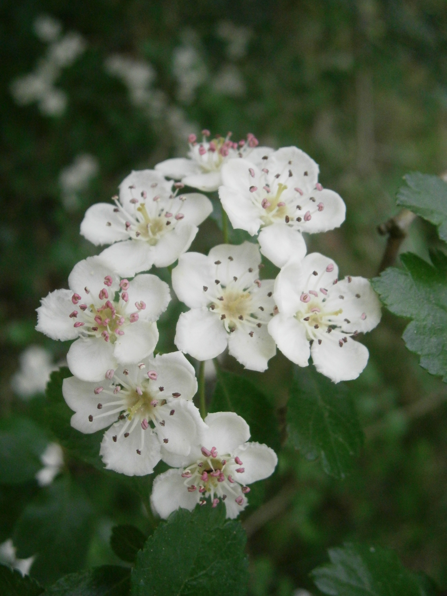

Crataegus spp.
| common name | hawthorn | |
| en español | espino, majuelo | |
| name in TCM | shān zhā (山楂) | |
| plant family | Rosaceae (rose) | |
| parts used | fresh and dried fruit, leaves, and flowers |
 from Wikimedia Commons by Dietrich Krieger, CC BY-SA 3.0
{kind=link}
 from Wikimedia Commons by Meneerke bloem - Own work, CC BY-SA 3.0
from Wikimedia Commons by Meneerke bloem - Own work, CC BY-SA 3.0
observations/description
dried berries
- small, ovoid, deep burgundy/blood red berries with shrivel lines from the dessication
- very light/almost no detectable aroma
dried leaves and flowers
- mix of colors from light brown to light green in the leaves, some stems, bits of light yellow or white that may be from the flowers
- earthy, almost savory aroma with lifting floral notes; salty, evocative of chinese spices
"Crataegus", Wikipedia
- Crataegus species are shrubs or small trees with small pome fruit and (usually) thorny branches
- leaves grow spirally arranged on long shoots, and in clusters on spur shoots on the branches or twigs
- leaves of most species have lobed or serrated margins and are somewhat variable in shape
- flowers are five-petalled and grow in flat-topped clusters and are most typically white, although they can also be pale pink or occasionally scarlet in colour
- fruit, sometimes known as a 'haw', is berry-like but structurally a pome
distribution/conservation status
"Crataegus", Wikipedia
- native to temperate regions of the Northern Hemisphere in Europe, Asia, North Africa, and North America
- most common species for medicinal use are C. monogyna, C. laevigata, and C. pinnatifida (in TCM), which are all listed as 'Least Concern' on the IUCN Red List of Threatened Species
primary actions
The Yoga of Herbs, p. 123-4
- stimulant, carminative, vasodilator, antispasmodic, diuretic
The Modern Herbal Dispensatory, p. 245-6
- anti-arrhythmic, antiseptic, cardiac, hypertensive, hypotensive
Spiritual Herbalism, p. 18-9
- cardiotonic, regulates heartbeat, vasodilator, diuretic, astringent, normalizer of blood pressure, strengthens heart muscle
The New Age Herbalist, p. 104
- vasodilator, hypotensive, cardiotonic, hyptertensive, carminative
notes from class, 10 Feb 2025
- anti-inflammatory, antioxidant, astringent, cardiac restorative/tonic, hypolipidemic, hypotensive, nervine, vasodilator
system affinities
cardiovascular
energetics
The Yoga of Herbs, p. 123-4
- reduces vāta; increases pitta; increases kapha (in excess)
- sour taste - sour post-digestive effect
- heating
The Modern Herbal Dispensatory, p. 245-6
- cooling, moistening
notes from class, 10 Feb 2025
- sweet and sour taste
- cooling (TCM) or warming (Āyurveda)
primary uses
The Yoga of Herbs, p. 123-4
- demonstrates the stimulatory power of sour herbs for circulation and digestion
- special action on the heart
- strengthens heart muscle
- promotes longevity
- particulary good for vāta conditions on the heart (e.g., nervous palpitation) or age-related heart issues (e.g., cholesterol, arteriosclerosis)
- may help remove food blockages and even tumors in the digestive tract
- may increase weight in the body, aggravates kapha in excess
- may aggravate pitta heart conditions and general heat conditions of the body
- affinity for alcohol
- in tincture with other heart tonics like cardamom and cinnamon to strengthen heart muscle
- in decoction with cinnamon and sweetened with honey as a heart tonic, take three times a day after meals
- other indicated heart conditions include heart weakness, valvular insufficiency, hypertension, blood clots
- also indicated for insomnia
The Modern Herbal Dispensatory, p. 245-6
- improves the tone of the heart muscle
- improves oxygen intake of the heart
- improves circulation of the heart
- energizes heart cells
- dilates blood vessels in the extremeties to reduce strain on the heart
- need to take regularly for best results
- improves cardiac function in heart disorders with or without chest pain
- also reduces stress and improves digestion
- indicated for cardiac weakness, palpitation, irregular/intermittant pulse with increased rate, dyspnea, nervous depression
The New Age Herbalist, p. 104
- flavonoids dilate the coronary and peripheral arteries
- procyanidines slow the heart beat
- studies have shown that berries reduced high blood pressure caused by hardening of the arteries and kidney disease
- studies have shown that flowers/leaves improved the health of patients suffering from 'aging heart' and those with heart valve disease
- both lowers high blood pressure and restores low blood pressure to normal
- treats angina, irregular heartbeat, spasms of the arteries, and insomia of nervous origin
- also used to aid digestion and treat dyspepsia and diarrhea
Spiritual Herbalism, p. 18-9
- supports the heart
- cardiac weakness/failure
- irregular or raised heartbeat
- murmurs
- high or low blood pressure
- arteriosclerosis
- nervine effect can help with insomnia, stress, and breathlessness
- diuretic effect can help with water retention
notes from class, 10 Feb 2025
- best known cardiotonic
- studies show that it improves heart function/circulation but doesn’t increase cardiac output/add stress on the heart, may even lower the stress
- tones heart muscle
- brings oxygen to the heart, prevents angina
- specific in many heart diseases
- safe for long-term use, which is best for chronic heart conditions or age-related conditions
- takes a long time to work and high doses are needed, especially of the berries
- can go in basically any heart formulation
- also good to add in formulations for conditions that may indirectly affect the heart, as in for COVID, pneumonia, scarlet fever, etc
- berries are delicate, so recommended to use hot infusion method for berries rather than decoction
witchcraft
Spiritual Herbalism, p. 18-9
- thorns caution us that protection is needed when navigating the world with an open heart
- reminds us to be present with our approach to our hearts and the hearts of others
- energy is Oggun: grants courage, fortifies the heart
- helps us shield ourselves while still functioning from a heart-centered place
- excellent for helping with giving and receiving love
- for heartbreak and sadness; helps us grieve and prepare our hearts for the energy of new love
- restores the heart's passion
- planetary influences: mars, fire
The Witch's Encyclopedia of Magical Plants, p. 147-8
- regarded as a sacred tree across multiple cultures
- venerated as a faery tree; marks a threshold to the otherworld
- considered bad luck to cut one down (esp. a solitary tree)
- witches believed to gather under solitary hawthorns
- elements: air, fire
- astrological influence: aquarius, aries, gemini, taurus, mars
extra information
"Crataegus oxyacantha", Wikipedia
- Crataegus oxyacantha is a rejected botanical name, though it is still used
- plants given this name are either identified as C. laevigata or C. monogyna
Spiritual Herbalism, p. 18-9
- long history in Druid culture, considered a sacred tree
- used in maypole rituals to represent fertility, happiness, and hope
pharmacology
The New Age Herbalist, p. 104
- flavonoid glycosides, saponins, procyanidines, trimethylamine, condensed tannins
Spiritual Herbalism, p. 18-9
- flavonoids, saponins, coumarin, glycosides, tannins, antioxidants
contraindications/pharmaceutical interactions/warnings
The Yoga of Herbs, p. 123-4
- contraindicated for ulcers and colitis
The Modern Herbal Dispensatory, p. 245-6
- completely safe for long-term use
Spiritual Herbalism, p. 18-9
- work with a medical doctor to use hawthorn if on heart medication or have ulcers or colitis
notes from class, 10 Feb 2025
- very safe most of the time
- berries are milder in action and have fewer/less pronounced side effects than the flowers/leaves
- flower/leaf more likely to interact with heart medications
preparations
The Modern Herbal Dispensatory, p. 245-6
- standard decoction
- dried berries, 30 g: 1 L, covered
- tincture
- dried leaves and flowers, 1:5, 45% alcohol
- fluid extract
- dried berries and flowers, 1:1, 50% alcohol
- glycerite
- dried flowers and berries, 1:8
- powder
Herbal Materia Medica, p. 14
- tincture
- fresh berries and flowering branches, 1:2
- dried berries, 1:5, 60% alcohol
- cold infusion
- dried berries, 1:32
The Herbal Medicine-Maker's Handbook, p. 110, 155, 192
- hot infusion
- dried leaves flowers, and berries, 2-5 g: 8 oz
- tincture
- fresh leaves, flowers, and berries, 1:2, 100% alcohol
- dried leaves, flowers, and berries, 1:5, 40-70% alcohol
- glycerite
- fresh leaves, flowers, and berries, 1:2, 80% glycerin
- dried leaves, flowers, and berries, 1:5, 60% glycerin
The Yoga of Herbs, p. 78, 123-4
- decoction
- dried berries, 1:16, reduce to 1/4 original amount
- powder
dosage
The Modern Herbal Dispensatory, p. 245-6
- standard decoction: 4-8 oz, 3/day
- tincture: 1-5 mL, 2-4/day
- glycerite: 5-20 mL, 2-4/day
- powder: 1000-2000 mg, 3/day
Herbal Materia Medica, p. 14
- tincture: 10-30 drops, up to 3/day
- cold infusion: 1-2 oz, up to 2/day
The Herbal Medicine-Maker's Handbook, p. 110, 155, 187
- hot infusion: 8 oz, 3/day
- tincture: 1-3 mL, 3/day
- glycerite: up to 5 mL, 2-3/day
The Yoga of Herbs, p. 92, 123-4
- decoction: 2 oz, 3/day
- powder: 250-1000 mg, 3/day
personal experiences/simples
tisane (1 tsp: 8 oz, 20+ minutes), dried berries
- very light aroma, vaguely reminiscent of cranberry skins
- very light taste (may hold up to decoction, or perhaps berries are old)
- flavor however is quite complex and delightful
- base of light tannins
- floral high notes reminiscent of rose
- vague savoriness/meatiness that literally makes me think of heart muscle tissue; maybe it's even a slight iron flavor that reminds me of blood
- very refreshing while drinking with light tannin/astringent mouthfeel after
decoction (8 g: 16 oz, 40 minutes), dried berries
- very light reddish golden hue, darkened to an orangy amber after reducing the decoction
- lovely, light floral aroma, less meaty/iron-y than the bract
- incredible, this is a friend
- earth/blood/metallic notes are far in the base, supported the lovely floral palate and high notes
- calming, transporting; similar effect to rose petals
- sweetness plus tannins is very pleasant. so sweet!
tisane (1.5 tsp: 12 oz, 12 minutes), dried leaves and flowers
- very delightful flavor, sweet, similar to the tisane of berries but much stronger
- aroma is more floral but still with that savory earthy/iron-y underpinning, still evocative of blood/heart
- i am reminded that i have had chinese hawthorn candy; similar flavor (but the candy was sweeter, more sour, and had a more intense flavor)
- feels slightly warming throughout the body
- felt slightly uncomfortable/anxious on drinking; a few minutes later quite calm/neutral
macerate (1 tbsp: 12 oz, 12 hours), dried leaves and flowers
- sour flavor much more pronounced, very nice balance to the floral high notes
- more floral, less earthy/metallic/bloody
- very refreshing with pleasant light tannins after
recipes
sources
"Crataegus" on Wikipedia. Retrieved 7 May 2025.
"Crataegus oxyacantha" on Wikipedia. Retrieved 17 February 2025.
Easely, Thomas and Steven Horne. The Modern Herbal Dispensatory (2016)
Frawley, David and Vasant Lad. The Yoga of Herbs: An Ayurvedic Guide to Herbal Medicine (1986)
Goldberg Blackthorn, Samantha and Shona MacDougall. Ace of Cups Herbal Medicine and Botanical Magic Herbal School (2024)
Green, James. The Herbal Medicine-Maker's Handbook: A Home Manual (2000)
Kynes, Sandra. The Witch's Encyclopedia of Magical Plants (2024)
Mabey, Richard et al. The New Age Herbalist (1988)
Moore, Michael. Herbal Materia Medica, Fifth Edition (1995)
Rose, Karen M. The Art & Practice of Spiritual Herbalism (2022)